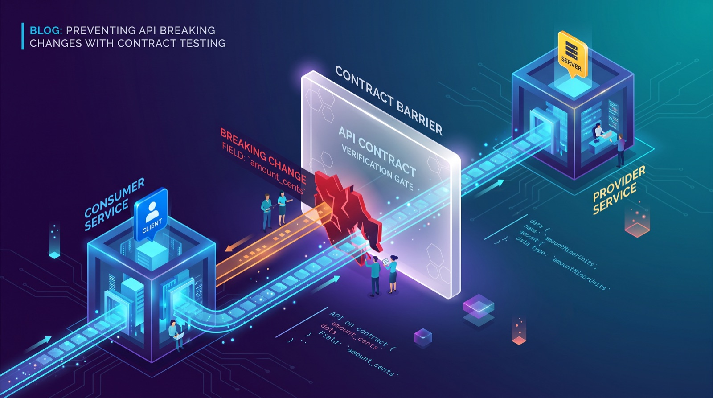

Catching Breaking API Changes Before They Reach Production With Contract Testing
How consumer-driven contract testing catches breaking API changes between services before they hit production, with a concrete example.
A payment service renames a field from amount_cents to amountMinorUnits. Every existing test for that service still passes, because those tests only check the service against itself. The break only shows up when the checkout service that depends on it starts throwing errors in staging, or worse, in production. This is one of the most common and most preventable failure modes in a microservices architecture, and it's exactly the gap that contract testing is designed to close.

Why end-to-end tests aren't enough here
Full end-to-end tests that spin up every service and run a real transaction through the system are valuable, but they're slow, brittle, and expensive to maintain as the number of services grows. They also tend to fail for reasons unrelated to the thing you're actually trying to verify: a flaky third service, a shared test environment that's down, a timing issue. Teams often respond by writing fewer of them, which means fewer chances to catch the kind of interface mismatch described above before release.
Contract testing sits in between unit tests and full integration tests. It checks one specific thing: does the provider (the service being called) still honor the expectations of its consumers (the services calling it)? It does this without needing both services running at the same time.
How consumer-driven contract testing works
The most common implementation of this idea is consumer-driven contract testing, popularized by the Pact framework. The flow looks like this:
- The consumer team (say, the checkout service) writes a test against a mock of the provider, describing exactly the request it will send and the response shape it expects back.
- Running that test generates a "pact" file: a JSON document recording the expected interaction.
- That pact file is published to a shared location (commonly a Pact Broker, or a hosted service such as PactFlow).
- The provider team (the payment service) pulls down every pact file published against it and replays each recorded request against its real, running API. If the real response doesn't match what the consumer expects, the provider's build fails.
A simplified consumer-side test might look like this:
const { like } = require('@pact-foundation/pact').Matchers;
describe('Checkout service talking to Payment API', () => {
it('requests a payment and expects a settled status', async () => {
await provider.addInteraction({
state: 'a valid card is provided',
uponReceiving: 'a payment request',
withRequest: {
method: 'POST',
path: '/payments',
body: { amount_cents: 1999, currency: 'USD' },
},
willRespondWith: {
status: 201,
body: { status: 'settled', id: like('pay_123') },
},
});
const result = await checkoutClient.charge(1999, 'USD');
expect(result.status).toBe('settled');
});
});Nothing here talks to a real payment service. It records the shape of the interaction, including the fact that checkout sends amount_cents. The payment team's CI pipeline then verifies its real API against that recorded shape on every change, before merging, so the rename to amountMinorUnits shows up as a failing build on the provider's side, days or weeks before it would have surfaced as a production incident.
Where this fits versus other approaches
| Approach | What it catches | Speed | Cost to maintain |
|---|---|---|---|
| Unit tests with mocks | Internal logic, not real interface drift | Fast | Low |
| Contract tests | Interface drift between a specific consumer and provider | Fast | Moderate |
| Full end-to-end tests | Real behavior across the whole system | Slow | High |
None of these replace the others. A reasonable split is many unit tests, a focused set of contract tests around service boundaries that change often or that have caused incidents before, and a small number of end-to-end tests covering the handful of flows that absolutely cannot break.
Pitfalls and limits
Contract testing is not a free upgrade, and it has real limits worth knowing before adopting it.
It only catches interface mismatches, not business logic errors. If the payment service correctly returns the shape the consumer expects but calculates the wrong amount, a contract test won't notice. You still need functional and integration tests for that.
It requires coordination. Someone has to run a broker (or pay for a hosted one), wire up webhooks so a new contract triggers a provider verification build, and get buy-in from both the consumer and provider teams. In organizations where teams don't talk to each other, introducing contract testing can surface that problem more than it solves it.
Contracts can go stale. If a consumer stops updating its pact file as its real usage changes, the provider ends up "safely" passing verification against a contract nobody relies on anymore, while a different, undocumented consumer breaks in production. The tooling only protects what's actually recorded.
It's most natural for synchronous HTTP or gRPC APIs. Event-driven and asynchronous messaging interactions can be modeled this way too, but it takes more setup and discipline to define what "the contract" even means for a message queue.
What to do next
Pick one consumer-provider pair that has broken in the past or that changes often, and write a single contract test for it rather than trying to cover every service at once. Stand up a Pact Broker (self-hosted is free) or a trial of a hosted equivalent so contracts have somewhere to live. Add provider verification as a required CI check before any deploy of that service, not as an optional, ignorable step. Once that one pair is working reliably, expand to the next highest-risk boundary instead of rolling it out everywhere simultaneously.
Sources
Servis za plaćanje preimenuje polje iz amount_cents u amountMinorUnits. Svi postojeći testovi za taj servis i dalje prolaze, jer provjeravaju servis samo u odnosu na njega samog. Problem se pokaže tek kada checkout servis, koji zavisi od njega, počne da baca greške na stagingu ili, još gore, u produkciji. Ovo je jedan od najčešćih i najlakše spriječivih načina na koje mikroservisna arhitektura puca, i upravo tu rupu ugovorno testiranje (contract testing) treba da zatvori.
Zašto end-to-end testovi ovdje nisu dovoljni
Puni end-to-end testovi koji podignu svaki servis i provuku stvarnu transakciju kroz sistem jesu vrijedni, ali su spori, krhki i skupi za održavanje kako broj servisa raste. Uz to često padaju iz razloga koji nemaju veze sa onim što zapravo pokušavate da provjerite: nestabilan treći servis, zajedničko testno okruženje koje ne radi, problem sa tajmingom. Timovi na to često reaguju tako što pišu manje takvih testova, a to znači i manje prilika da se neusklađenost interfejsa poput opisane uhvati prije izdavanja.
Ugovorno testiranje se nalazi između unit testova i punih integracionih testova. Provjerava jednu konkretnu stvar: da li provajder (servis koji se poziva) i dalje poštuje očekivanja svojih potrošača (servisa koji ga pozivaju)? I to radi bez potrebe da oba servisa budu pokrenuta u isto vrijeme.
Kako radi ugovorno testiranje vođeno potrošačem
Najčešća implementacija ove ideje je ugovorno testiranje vođeno potrošačem (consumer-driven contract testing), koje je popularizovao Pact framework. Tok izgleda ovako:
- Tim potrošača (recimo, checkout servis) piše test protiv mocka provajdera, u kojem tačno opisuje zahtjev koji će poslati i oblik odgovora koji očekuje nazad.
- Pokretanje tog testa generiše "pact" fajl: JSON dokument koji bilježi očekivanu interakciju.
- Taj pact fajl se objavljuje na zajedničko mjesto (najčešće Pact Broker ili hostovani servis kao što je PactFlow).
- Tim provajdera (servis za plaćanje) preuzima svaki pact fajl objavljen za njega i ponavlja svaki zabilježeni zahtjev nad svojim stvarnim, pokrenutim API-jem. Ako se stvarni odgovor ne poklapa sa onim što potrošač očekuje, build provajdera pada.
Pojednostavljen test na strani potrošača mogao bi da izgleda ovako:
const { like } = require('@pact-foundation/pact').Matchers;
describe('Checkout service talking to Payment API', () => {
it('requests a payment and expects a settled status', async () => {
await provider.addInteraction({
state: 'a valid card is provided',
uponReceiving: 'a payment request',
withRequest: {
method: 'POST',
path: '/payments',
body: { amount_cents: 1999, currency: 'USD' },
},
willRespondWith: {
status: 201,
body: { status: 'settled', id: like('pay_123') },
},
});
const result = await checkoutClient.charge(1999, 'USD');
expect(result.status).toBe('settled');
});
});Ništa ovdje ne razgovara sa stvarnim servisom za plaćanje. Test samo bilježi oblik interakcije, uključujući i to da checkout šalje amount_cents. CI pipeline tima za plaćanja zatim pri svakoj izmjeni, prije merge-a, provjerava svoj stvarni API u odnosu na taj zabilježeni oblik, pa se preimenovanje u amountMinorUnits pokaže kao pao build na strani provajdera — danima ili sedmicama prije nego što bi isplivalo kao incident u produkciji.
Gdje se ovo uklapa u odnosu na druge pristupe
| Pristup | Šta hvata | Brzina | Cijena održavanja |
|---|---|---|---|
| Unit testovi sa mockovima | Internu logiku, ne i stvarno odstupanje interfejsa | Brzo | Niska |
| Ugovorni testovi | Odstupanje interfejsa između konkretnog potrošača i provajdera | Brzo | Umjerena |
| Puni end-to-end testovi | Stvarno ponašanje kroz cijeli sistem | Sporo | Visoka |
Nijedan od ovih pristupa ne zamjenjuje ostale. Razumna podjela je mnogo unit testova, fokusiran skup ugovornih testova oko granica servisa koje se često mijenjaju ili su već izazvale incidente, i mali broj end-to-end testova koji pokrivaju nekoliko tokova koji apsolutno ne smiju da puknu.
Zamke i ograničenja
Ugovorno testiranje nije besplatna nadogradnja i ima stvarna ograničenja koja vrijedi znati prije uvođenja.
Hvata samo neusklađenost interfejsa, ne i greške u poslovnoj logici. Ako servis za plaćanje ispravno vrati oblik koji potrošač očekuje, ali izračuna pogrešan iznos, ugovorni test to neće primijetiti. Za to su vam i dalje potrebni funkcionalni i integracioni testovi.
Zahtijeva koordinaciju. Neko mora da održava broker (ili da plati hostovani), poveže webhookove tako da novi ugovor pokrene verifikacioni build provajdera, i da dobije podršku i tima potrošača i tima provajdera. U organizacijama u kojima timovi ne razgovaraju međusobno, uvođenje ugovornog testiranja će taj problem prije razotkriti nego riješiti.
Ugovori mogu da zastare. Ako potrošač prestane da ažurira svoj pact fajl dok mu se stvarna upotreba mijenja, provajder "bezbjedno" prolazi verifikaciju nad ugovorom na koji se više niko ne oslanja, dok neki drugi, nedokumentovani potrošač puca u produkciji. Alati štite samo ono što je zaista zabilježeno.
Najprirodnije je za sinhrone HTTP ili gRPC API-je. I interakcije zasnovane na događajima i asinhronim porukama mogu se modelovati na ovaj način, ali je potrebno više podešavanja i discipline da se uopšte definiše šta je "ugovor" za red poruka.
Šta dalje
Izaberite jedan par potrošač–provajder koji je već pucao ili se često mijenja i napišite jedan ugovorni test za njega, umjesto da pokušavate da odjednom pokrijete sve servise. Podignite Pact Broker (self-hosted verzija je besplatna) ili probnu verziju hostovane alternative, da ugovori imaju gdje da žive. Dodajte verifikaciju provajdera kao obaveznu CI provjeru prije svakog deploya tog servisa, a ne kao opcioni korak koji se lako ignoriše. Kada taj jedan par počne pouzdano da radi, proširite se na sljedeću granicu sa najvećim rizikom, umjesto da sve uvodite svuda istovremeno.